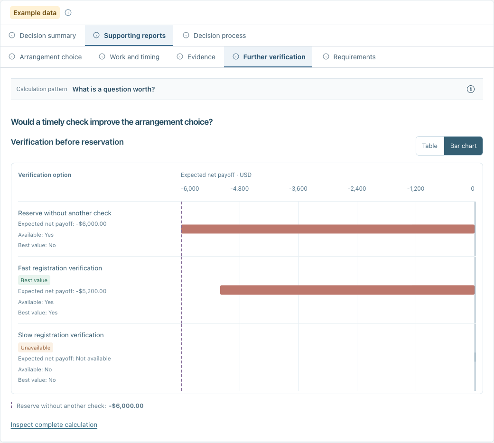

Maya must get the complete order to the customer before the promised cutoff. Direct costs $4,000; Backup costs $6,000. A portal listing exists, but it does not establish the transportation-registration condition required by Direct. Finance wants a reason to pay the premium, and the reservation window closes at noon.
The Order fulfillment Marketplace workflow connects three bounded questions: what the records establish, which complete shipment responses meet the requirements, and whether checking first would improve the decision. This story follows that installed example. The CLI-to-SDK continuation uses a separately authored operating case with a consolidation slot; its inputs and findings are not interchangeable with this one.
Keep the shipment fixed. Change what is established.
The customer commitment, quotes, resources and reservation cutoff stay fixed. The first calculation retains both possible registration states. Backup meets the requirements in either state. Direct fails in the unregistered state, so its lower quote does not yet support an unconditional shipment proposal.
Registration remains unresolved.
Backup is supported at $6,000. Direct's $4,000 quote depends on a condition the supplied portal record does not settle.

A current scoped record establishes registration.
The new evidence supports the required registration for this shipment. Direct can now enter the complete cost-first comparison; the cheaper response is supported at $4,000.

Obtaining a genuine current confirmation changes the factual basis. Rewording the portal listing, changing a report tab or selecting the cheaper quote cannot do that. Maya can explain why a more expensive arrangement was initially supported and which new record makes the lower-cost response usable.
Before that record exists, would checking help?
In the unresolved case, Maya can compare reserving Backup now with buying a check. Under the supplied fictional 50/50 registration probabilities and perfectly accurate verification, a $200 fast check returns in time for a complete response by 10:30 a.m. Its expected total cost is $5,200, including the fee. The $50 slow check returns at 2 p.m., after the noon reservation cutoff.
That is a separate information-value finding. The portal listing does not supply the probabilities or establish perfect accuracy. Maya needs defensible probability, consequence and timing premises before using the numerical comparison in real work. Without them she can still inspect the operating options.
Inspect the separate verification comparison


Maya has a specific next step before committing money.
With registration unresolved, Maya can propose the timely check under its stated assumptions or put forward the immediately supported Backup arrangement. If a current scoped confirmation arrives, she can recalculate and compare Direct on that new basis. A changed input makes its dependent findings stale until recalculated.
The assessment checks the complete arrangement. The calculation establishes a supported proposal. Spending authorization, carrier reservation and delivery remain business actions with their own evidence. This example checks declared shipment requirements; it does not establish every aspect of a Walmart launch.
Open the example, follow the decision process or inspect the complete reports in the collection guide. The Python follow-up demonstrates one explicit way estimates can enter a separate information-value calculation.